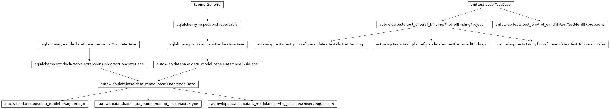
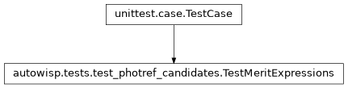
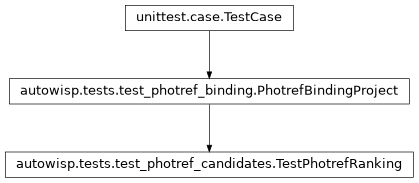
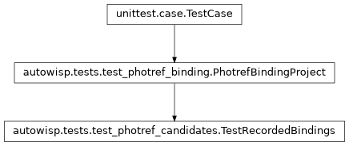
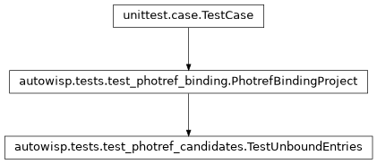

autowisp.tests.test_photref_candidates module
Class Inheritance Diagram

Tests for offering and ranking the candidates for a single photref.
The photometric reference selection page offers the images of a photref
group that still need a reference, best first by a merit expression from the
project’s library. These check which entries count as still needing one, which
a newly chosen one reports binding, and how the offered ones are ranked, on
the throwaway project the binding tests
use: one camera with channels R and G, and images near, far
and longer.
- class autowisp.tests.test_photref_candidates.TestMeritExpressions(methodName='runTest')[source]
Bases:
TestCase
Which library expressions candidates can be ranked by.
- class autowisp.tests.test_photref_candidates.TestPhotrefRanking(methodName='runTest')[source]
Bases:
PhotrefBindingProject
The offered candidates of a group, best first by the default merit.
- test_every_diagnostic_recorded_for_the_group_is_returned()[source]
Those of the members’ images, not of the reference’s own.
- class autowisp.tests.test_photref_candidates.TestRecordedBindings(methodName='runTest')[source]
Bases:
PhotrefBindingProject
What binding a group to a newly chosen photref reports binding.
- class autowisp.tests.test_photref_candidates.TestUnboundEntries(methodName='runTest')[source]
Bases:
PhotrefBindingProject
Which entries of a photref group still need a reference.